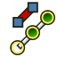

Cables Workbench/de
Einleitung
Der Arbeitsbereich  Cables ist ein Werkzeugsatz für das Modellieren elektrischer Anlagen in Gebäudeprojekten. Mit seiner Hilfe können Leitungsverläufe in Gebäuden oder anderen Objekten sowie Einzelverdrahtungen erstellt werden. Er ist ein externer Arbeitsbereich.
Cables ist ein Werkzeugsatz für das Modellieren elektrischer Anlagen in Gebäudeprojekten. Mit seiner Hilfe können Leitungsverläufe in Gebäuden oder anderen Objekten sowie Einzelverdrahtungen erstellt werden. Er ist ein externer Arbeitsbereich.
Dieser Werkzeugsatz kann für die Erstellung von Installationsdosen oder anderen gebrauchsfertigen Elektro-Bauteilen (die Liste der Bauteile wächst hoffentlich in der Zukunft noch) genutzt werden. Diese Elemente können mit vollständig parametrisierbaren Leitungen aus verschiedenen Leitungsprofilen, mit unterschiedlichen Anzahlen an Leitern und verschiedenen Leiterquerschnitten verbunden werden. Es gibt ein paar vordefinierte Leitungsprofile, aber es ist ebenso möglich, eigene, nicht standardisierte Profile mit einer einfachen CSV-Datei zu erzeugen.
Modelle, die mit diesem Arbeitsbereich erstellt wurden, ermöglichen Elemente einfach neu zu positionieren, ohne dass Verbindungen verloren gehen. Leitungen können ihre Form den Positionen anpassen. Diese Funktion ist jedoch noch nicht perfekt.
Der Arbeitsbereich zielt darauf ab, zum Arbeitsbereich BIM kompatibel zu sein (Festkörperobjekte, die hier erstellt wurden, sollten dieselben Basisattribute und Eigenschaften besitzen, wie andere BIM-Objekte: Material, IFC-Typ und IFC-Aattribute usw.); er kann aber auch für Zwecke außerhalb des Bauwesens genutzt werden. Seit Version 0.3.0 ist der Arbeitsbereich auch besser zum Modellieren von Verbindungen zwischen Leiterplatten innerhalb von Maschinen usw. geeignet. Er ermöglicht eigene Bibliotheken mit Verbindern, Anschlussdosen und elektrischen Geräten aufzubauen (jede Hilfe bei der Erstellung von z. B. einer (Modell-) Reihe vorgefertigter Verbindungen ist sehr willkommen).

Beispiel von Installationsdosen für Wandmontage und Leitungen
Animierte Version hier

Beispiel für ein dreiadriges Flachkabel:
Mehrfachmaterial-Kabel-Form und ihrem Basis- Leitungsverlauf, Leitungsprofil und Einzelleitern.

{kind=link}
Links: Beispiel für die Verteilerdose mit Leitungsschutzschaltern (MCB).
Rechts: Beispiel für ein Kabel mit Leitungsverbindungs-Abschluss
Installation
Dieser externe Arbeitsbereich kann mit dem  Addon-Manager installiert werden. Siehe auch Weitere Arbeitsbereiche installieren für die manuelle Installation.
Addon-Manager installiert werden. Siehe auch Weitere Arbeitsbereiche installieren für die manuelle Installation.
Werkzeuge
Leitungswerkzeuge werden nach ihrer Verwendung in wenige Gruppen unterteilt.
Werkzeuge zur Erstellung und Bearbeitung von Leitungen
 Leitungsverlauf: Erstellt einen neuen Leitungsverlauf (WireFlex-Objekt), der zwischen zwei oder mehr ausgewählten Knoten oder Objekten verlegt wird.
Leitungsverlauf: Erstellt einen neuen Leitungsverlauf (WireFlex-Objekt), der zwischen zwei oder mehr ausgewählten Knoten oder Objekten verlegt wird.
 Knoten hinzufügen: Fügt einen weiteren Knoten auf der ausgewählten Kante eines Leitungsverlaufs hinzu.
Knoten hinzufügen: Fügt einen weiteren Knoten auf der ausgewählten Kante eines Leitungsverlaufs hinzu.
 Knoten löschen: Löscht einen ausgewählten Knoten aus dem Leitungsverlauf.
Knoten löschen: Löscht einen ausgewählten Knoten aus dem Leitungsverlauf.
 Knoten befestigen: Befestigt den ausgewählten Knoten eines Leitungsverlaufs an einem externen Knoten oder Objekt.
Knoten befestigen: Befestigt den ausgewählten Knoten eines Leitungsverlaufs an einem externen Knoten oder Objekt.
 Knotenbefestigung entfernen: Entfernt die Befestigung eines ausgewählten Knotens in einem Leitungsverlauf an einem externen Knoten bzw. Objekt.
Knotenbefestigung entfernen: Entfernt die Befestigung eines ausgewählten Knotens in einem Leitungsverlauf an einem externen Knoten bzw. Objekt.
-  Leitungsverlauf an Kabelanschluss befestigen: Erstellt eine Befestigung des Leitungsverlaufs am Ende des Kabelanschlusses (eingeführt in Version 0.3.0).
{kind=link}
 Leitungsverlauf von Kabelanschluss lösen: Löst befestigte Leitungsverlaufsenden vom Kabelanschluss (eingeführt in Version 0.3.0).
Leitungsverlauf von Kabelanschluss lösen: Löst befestigte Leitungsverlaufsenden vom Kabelanschluss (eingeführt in Version 0.3.0).
 Verbundverlauf: Erstellt einen neuen Verbundverlauf (CompoundPath-Objekt), basierend auf ausgewählten Objekten (eingeführt in Version 0.2.0). Es erstellt ein Linienzugobjekt, das auf einer Gruppe anderer Linienzugobjekte basiert. Seine topologische Form ist ein Verbund aus Linienzugformen oder eine einzelne Linienzugform.
Verbundverlauf: Erstellt einen neuen Verbundverlauf (CompoundPath-Objekt), basierend auf ausgewählten Objekten (eingeführt in Version 0.2.0). Es erstellt ein Linienzugobjekt, das auf einer Gruppe anderer Linienzugobjekte basiert. Seine topologische Form ist ein Verbund aus Linienzugformen oder eine einzelne Linienzugform.
 Bearbeiten: Bearbeitet den aktiven Leitungsverlauf (WireFlex-Objekt) (eingeführt in Version 0.2.0).
Bearbeiten: Bearbeitet den aktiven Leitungsverlauf (WireFlex-Objekt) (eingeführt in Version 0.2.0).
Werkzeuge zum Erstellen von Leitungen und anderen vorgefertigten Elementen
 Leitungsprofil: Erstellt ein neues Leitungsprofil im aktuellen Dokument.
Leitungsprofil: Erstellt ein neues Leitungsprofil im aktuellen Dokument.
 Leitung: Erstellt eine neue Leitung auf Basis eines ausgewählten Linienzuges und eines ausgewählten Leitungsprofils.
Leitung: Erstellt eine neue Leitung auf Basis eines ausgewählten Linienzuges und eines ausgewählten Leitungsprofils.
 Leitungsführung: Fügt eine auf einem ausgewählten Leitungsverlauf basierende neue Leitungsführung (Kabelkanal, Installationsrohr) hinzu (eingeführt in Version 0.2.0).
Leitungsführung: Fügt eine auf einem ausgewählten Leitungsverlauf basierende neue Leitungsführung (Kabelkanal, Installationsrohr) hinzu (eingeführt in Version 0.2.0).
 Installationsdose: Erstellt eine neue parametrische Installationsdose.
Installationsdose: Erstellt eine neue parametrische Installationsdose.
 Leitungsverbindung: Erstellt eine neue parametrische universelle Leitungsverbindung.
Leitungsverbindung: Erstellt eine neue parametrische universelle Leitungsverbindung.
 Lichtauslass: Erstellt einen neuen parametrischen universellen Lichtauslass für eine Leitung.
Lichtauslass: Erstellt einen neuen parametrischen universellen Lichtauslass für eine Leitung.
 Betriebsmittel: Fügt ein neues Betriebsmittel hinzu (eingeführt in Version 0.3.0).
Betriebsmittel: Fügt ein neues Betriebsmittel hinzu (eingeführt in Version 0.3.0).
 Materialien: Fügt einen Satz von Mehrfachmaterialien zum aktuellen Dokument hinzu.
Materialien: Fügt einen Satz von Mehrfachmaterialien zum aktuellen Dokument hinzu.
Abhängige Objekte
Diese Objekte können nicht direkt erstellt werden. Sie sind so konzipiert, dass sie mit Cables Installationsdose, Cables Leitungsverbindung, Cables Lichtauslass oder Cables Elektrisches Gerät Objekte abhängig von ihrer Konfiguration.
 Cable Kabelanschluss: Enthält ein parametrisches Kabelanschluss-Objekt (eingeführt in Version 0.3.0).
Cable Kabelanschluss: Enthält ein parametrisches Kabelanschluss-Objekt (eingeführt in Version 0.3.0).
 Cables Unterstützungslinie: Enthält ein Unterstützungslinien-Objekt (eingeführt in Version 0.3.0).
Cables Unterstützungslinie: Enthält ein Unterstützungslinien-Objekt (eingeführt in Version 0.3.0).
Unterstützungs-Werkzeuge
Diese Werkzeuge werden hauptsächlich verwendet, um die Befestigungen anderer Objekte zu bearbeiten. Sie können auch erfolgreich mit anderen Arbeitsbereichen verwendet werden.
 Befestigungspunkt: Fügt einen universellen Befestigungspunkt hinzu.
Befestigungspunkt: Fügt einen universellen Befestigungspunkt hinzu.
 Befestigungslinie: Fügt eine universelle Befestigungslinie hinzu.
Befestigungslinie: Fügt eine universelle Befestigungslinie hinzu.
 Anbringen: Erstellt eine Befestigung, ohne die globale Platzierung eines Objekts zu ändern. (eingeführt in Version 0.3.0).
Anbringen: Erstellt eine Befestigung, ohne die globale Platzierung eines Objekts zu ändern. (eingeführt in Version 0.3.0).
 BefestigungDeaktivieren: Deaktiviert die Befestigung ausgewählter Objekte (eingeführt in Version 0.3.0).
BefestigungDeaktivieren: Deaktiviert die Befestigung ausgewählter Objekte (eingeführt in Version 0.3.0).
Externe Werkzeuge
 Raster umschalten: Ändert die Sichtbarkeit des Rasters.
Raster umschalten: Ändert die Sichtbarkeit des Rasters.
Hinweise
Dieser Arbeitsbereich befindet sich in einer frühen Entwicklungsphase. Es ist mit Fehlern zu rechnen, die ggf. das Modell zerstören können. Einige Eigenschaften des Modells können sich in der Zukunft verändern und sind inkompatibel mit der aktuellen Version. Die Wiki-Seiten dieses Arbeitsbereichs können sich zukünftig ebenfalls grundlegend verändern. Jeder Kommentar und jede neue Idee sind herzlich willkommen. Bitte die Kommentare und Absturzberichte über die in den Referenzen angegebenen Kanäle teilen.
Beschreibung des Basis-Arbeitsablaufs
- Endpunkte für Leitungen wie Installationsdosen oder Lichtauslässe erstellen und im 3D-Raum anordnen.
- Basisleitungsverläufe (WireFlex-Objekte), die die erzeugten Endpunkte verbinden, erstellen und mit Hilfe von Befestigungslinien oder Befestigungspunkten im 3D-Raum anordnen.
- Für das Projekt geeignete Leitungsprofile erstellen.
- Leitungen erstellen, die auf den existierenden Basisleitungsverläufen und Leitungsprofilen basieren.
- Die Leitungen mit voreingestellten oder angepassten Materialien einfärben.
- Abschließend (wahlweise) die einzelnen Adern mit Leitungsverbindungen verbinden.
Anleitungen und Beispiele
FreeCAD-Beispieldokumente mit Leitungen:
- Beispiele verteilt mit dem Quellcode
Beispiele in animierten Bildern:
- Beispiele eines einfachen Arbeitsablaufs
- WireFlex Bewegungsbeispiele
- Nutzung von Installationsdosen
- Nutzung von Leitungsverbindungen
Referenzen
- Autor:
- Quellcode auf GitHub: https://github.com/sargo-devel/Cables
- FreeCAD-Forum: https://forum.freecad.org/viewtopic.php?t=94090
- Fehler melden: Bitte Fehler hier melden.